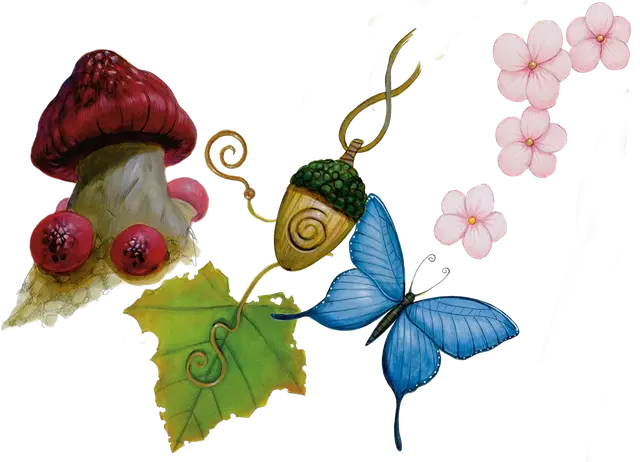

Затронутый феями
Fey Touched

Ваше взаимодействие с магией Страны Фей изменило вас, даровав вам следующие преимущества:
- Увеличьте значение вашего Интеллекта, Мудрости или Харизмы на 1 при максимуме 20.
- Вы узнаёте заклинание туманный шаг [misty step] и одно заклинание 1-го уровня на ваш выбор. Заклинание 1-го уровня должно принадлежать школе Прорицания или Очарования. Вы можете накладывать каждое из этих заклинаний без затрат ячеек заклинаний. Как только вы накладываете любое из этих заклинаний подобным образом, вам необходимо закончить продолжительный отдых, чтобы наложить это заклинание подобным образом вновь. Вы также можете накладывать эти заклинания, используя любые имеющиеся у вас ячейки заклинаний подходящего уровня. Базовой характеристикой для этих заклинаний является та, которую вы увеличили данной чертой.